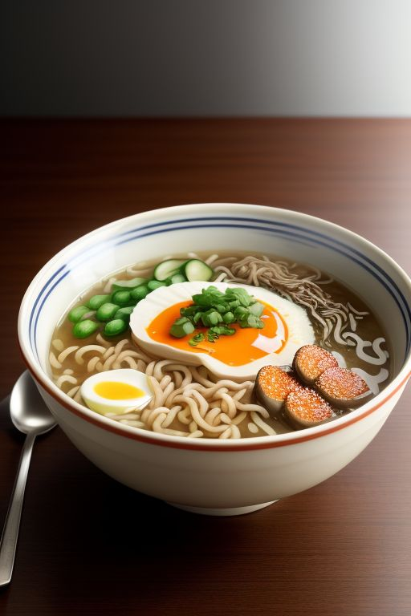

Description
Savor the rich, savory flavors of this homemade ramen, featuring tender
noodles in a miso-soy broth infused with garlic,
ginger, and sesame oil. Topped with soft-boiled eggs,
succulent pork belly, and fresh vegetables, each bowl is garnished
with nori and sesame seeds for a perfect blend of umami and
freshness. This comforting dish is simple to prepare and
irresistibly delicious.
Ingredients
- 4 cups chicken or vegetable broth
- 4 cups chicken or vegetable broth
- 2 tablespoons soy sauce
- 1 tablespoon sesame oil
- 2 cloves garlic, minced
- 1-inch piece ginger, minced
- 1 tablespoon mirin (optional)
- 1 teaspoon chili oil or Sriracha (optional for heat)
- 2 packages of fresh or dried ramen noodles
- 4 slices of pork belly or chicken (cooked)
- 2 soft-boiled eggs
- 1 cup spinach or bok choy
- 1/2 cup shiitake mushrooms, sliced
- 1/2 cup corn kernels (optional)
- 2 green onions, thinly sliced
- 1 sheet nori (seaweed), cut into strips
- 1 tablespoon sesame seeds
- 1/4 cup bamboo shoots (optional)
- 1 tablespoon pickled ginger (optional)
- Sliced green onions (for garnish)
- Additional chili oil or Sriracha (for garnish)
- Sesame seeds (for garnish)
Steps
- Prepare the Broth
- In a large pot, heat 1 tablespoon of sesame oil over medium heat.
- Add the minced garlic and ginger, sautéing for 1-2 minutes until fragrant.
- Pour in the 4 cups of chicken or vegetable broth, and bring it to a simmer.
- Stir in 2 tablespoons of miso paste, 2 tablespoons of soy sauce, and 1 tablespoon of mirin (if using). Simmer for 5-10 minutes, allowing the flavors to meld.
- If you like a spicy kick, add 1 teaspoon of chili oil or Sriracha to the broth.
- Cook the Noodles
- While the broth is simmering, cook the ramen noodles according to the package instructions. Typically, this involves boiling them in water for 3-5 minutes until tender.
- Drain the noodles and set them aside.
- Prepare the Toppings
- Soft-Boiled Eggs: Bring a small pot of water to a boil. Gently lower the eggs into the boiling water and cook for 6-7 minutes for soft-boiled eggs. Transfer them to an ice bath, peel, and slice in half.
- Cooked Pork Belly or Chicken: If not already cooked, pan-fry or roast your pork belly or chicken slices until they're golden and crispy.
- Vegetables: Blanch the spinach or bok choy in boiling water for 1 minute, then drain. Sauté the shiitake mushrooms in a bit of oil until tender.
- Assemble the Ramen Bowls
- Divide the cooked noodles into serving bowls
- Pour the hot broth over the noodles, ensuring each bowl has a good amount of broth.
- Arrange the pork belly or chicken slices, soft-boiled egg halves, spinach or bok choy, sautéed mushrooms, corn, and bamboo shoots (if using) on top of the noodles.
- Garnish and Serve
- Top each bowl with thinly sliced green onions, strips of nori, sesame seeds, and pickled ginger (if using).
- Add a drizzle of chili oil or Sriracha if you like extra heat.
- Serve the ramen hot and enjoy!